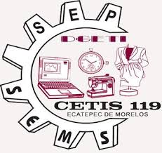

Cuando hablamos de trabajo colaborativo, debemos tener en cuenta que hay que establecer una buena comunicación abierta entre las personas que participan, determinar las acciones para el desarrollo de las labores, realizar una toma de decisiones en conjunto y tener metas en común

El CETIS No. 119, (Institución de educación media superior, Ecatepec de Morelos, Estado de México) invita a conocer el trabajo en equipo de nuestros compañeros.
Para profundizar más sobre el tema, puedes revisar las siguientes infografías